Roteiro operacional com prints reais do ambiente de teste: cadastro, entrada no ambulatório do Júlia, pacientes, LME, geração de processo, correção e repetição de LME de colega.
O usuário acessa a tela inicial, cria a conta quando for primeiro acesso e depois entra com e-mail e senha.
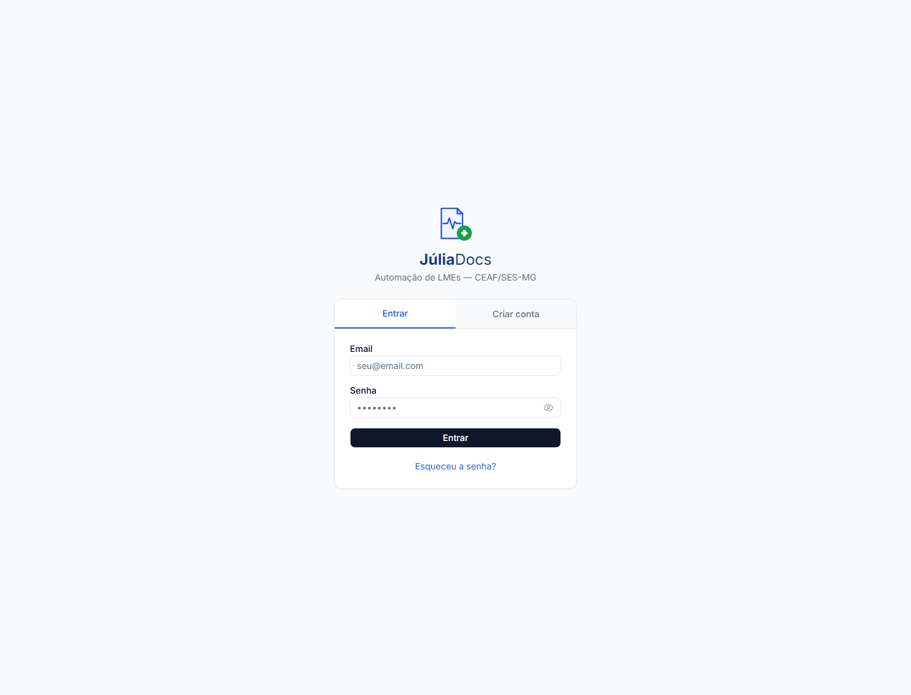
Depois de criar a conta, o usuário deve entrar no ambulatório existente usando o código informado pela administração.
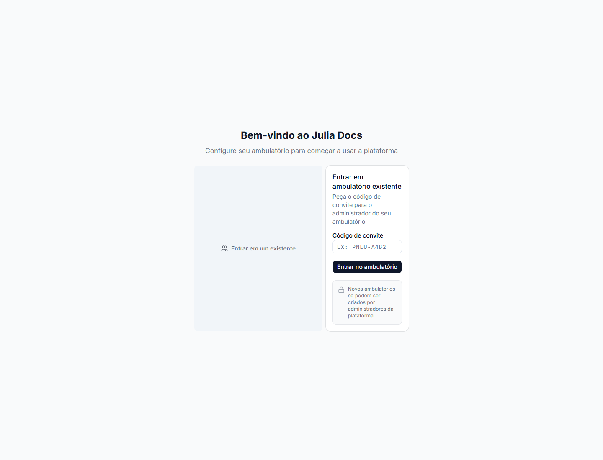
O Dashboard é a tela de acompanhamento do ambulatório.
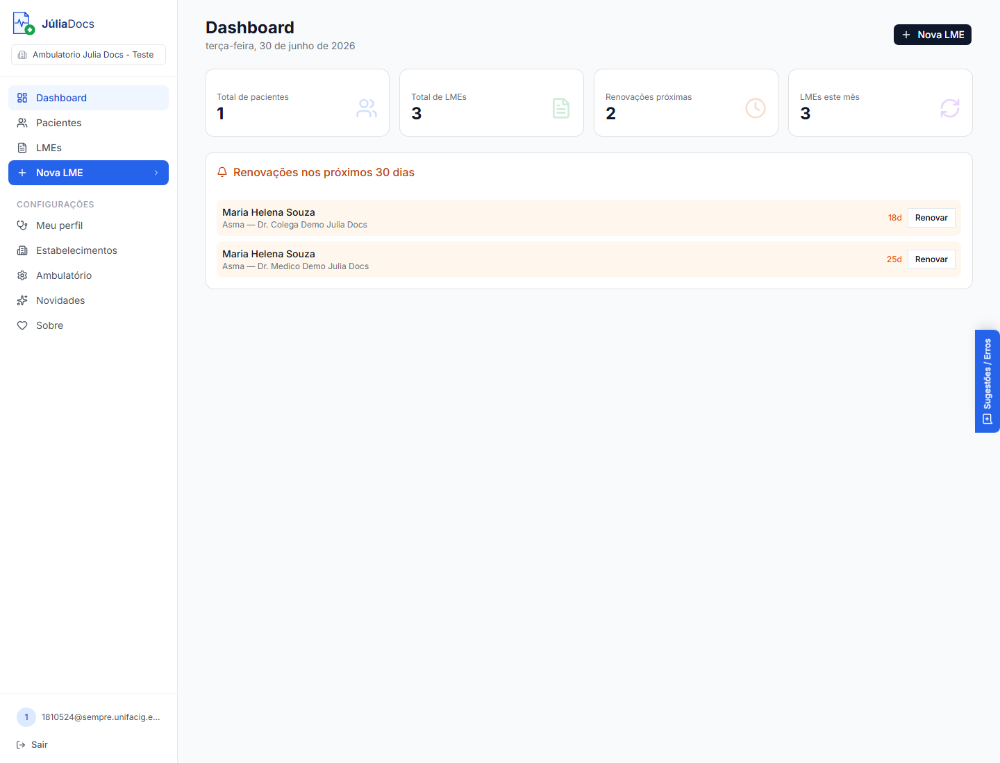
Antes de emitir uma LME, cadastre ou localize o paciente.
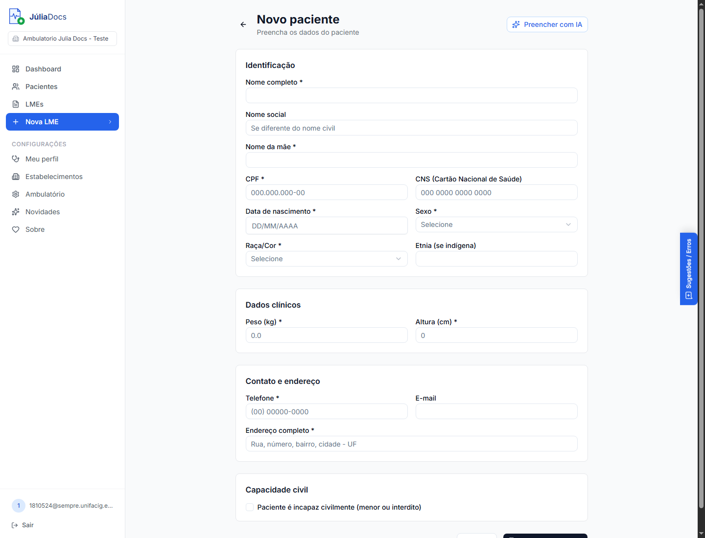
A IA pode acelerar o cadastro a partir de texto copiado do prontuário.
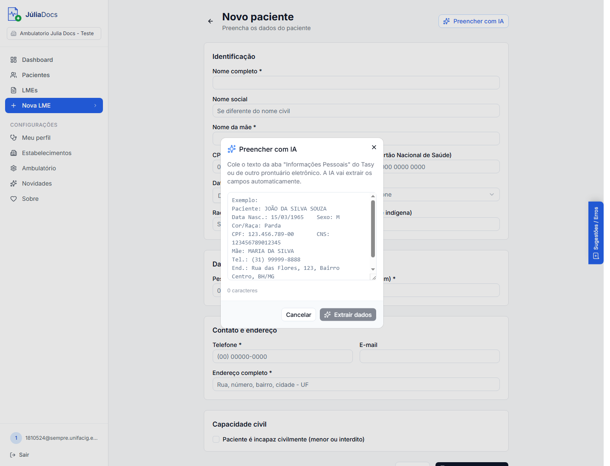
O assistente guia o usuário em etapas.
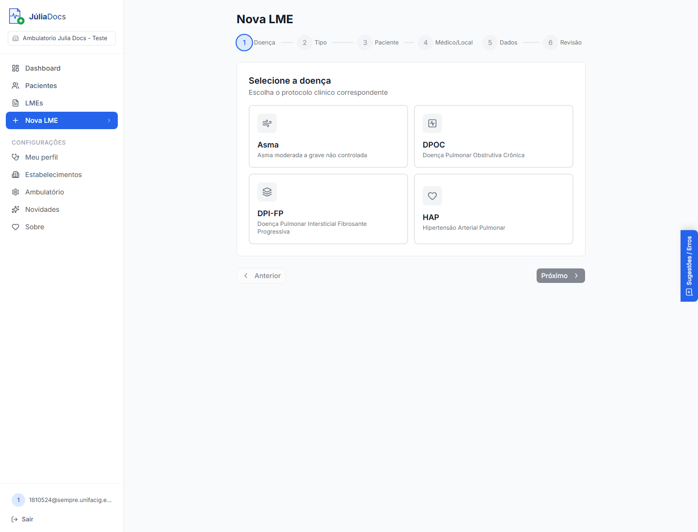
Essa escolha define quais documentos serão preenchidos.
| Opção | Quando usar |
|---|---|
| Processo Completo | Primeira solicitação ou mudança de medicamento/situação clínica. Gera o conjunto completo. |
| LME + Receita | Renovação de tratamento já aprovado. Mais rápido, focado no essencial. |
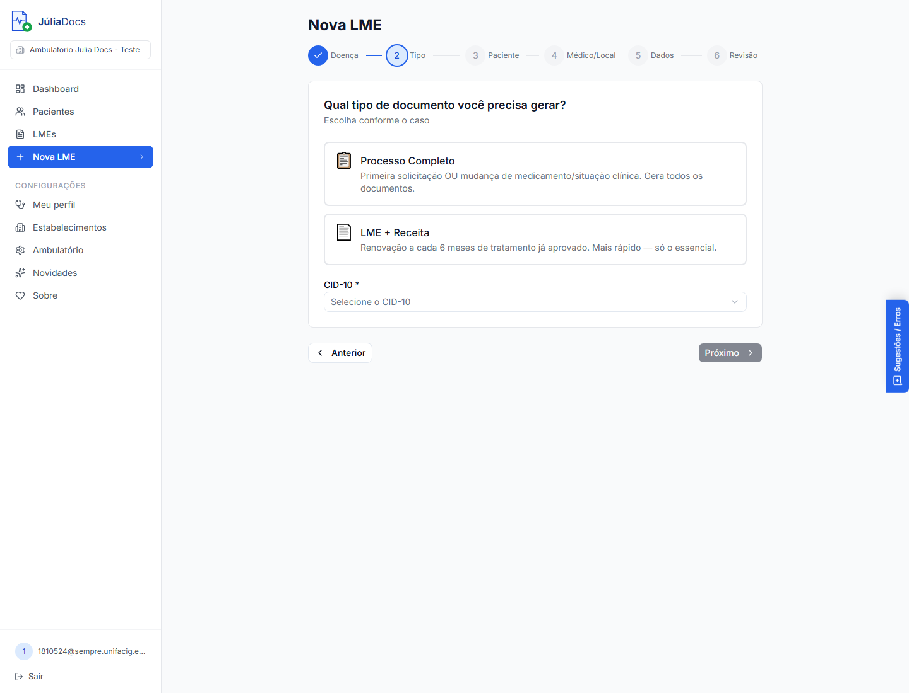
Depois de criada, a LME abre uma tela de detalhe.
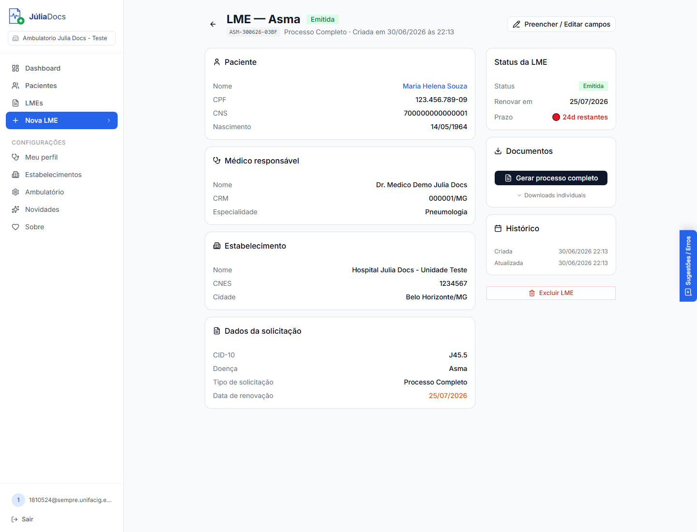
Quando uma LME própria voltar com erro, o criador pode corrigir os campos.
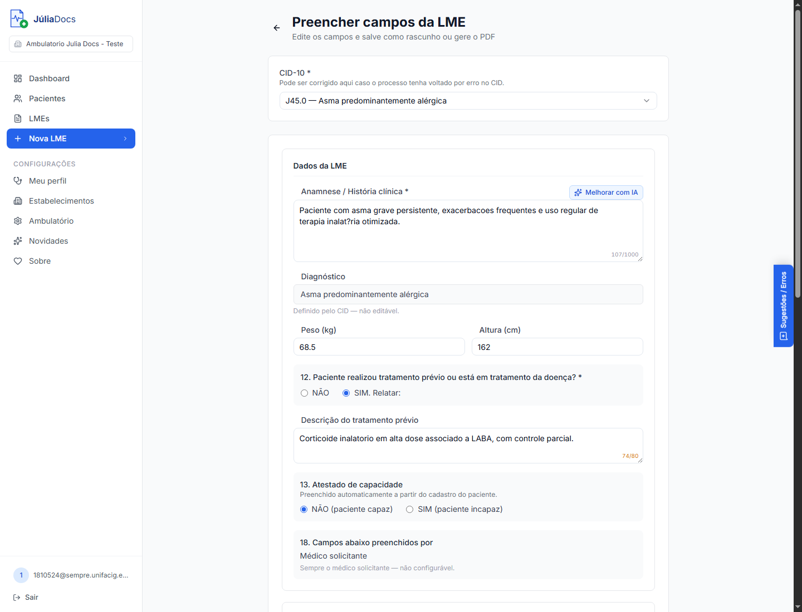
Uma LME emitida por outro médico não deve ser editada diretamente em seu nome.
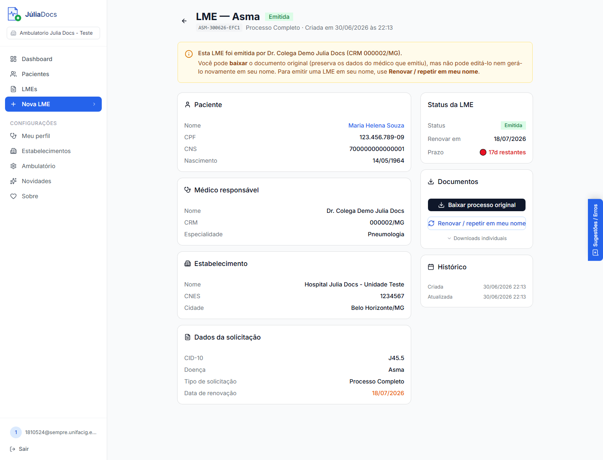
Ao repetir uma LME de colega, escolha o escopo da nova emissão.
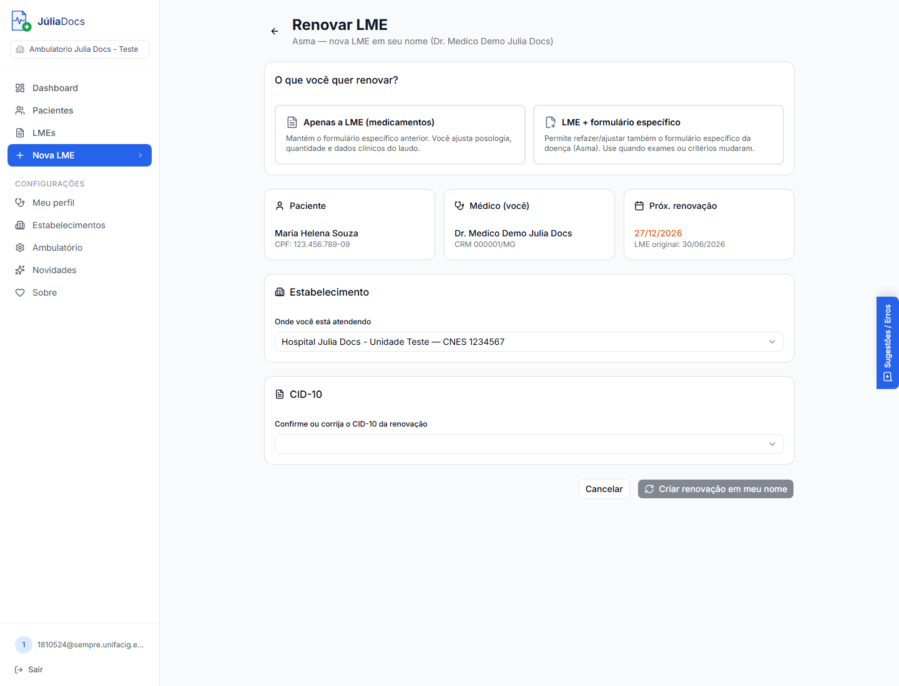